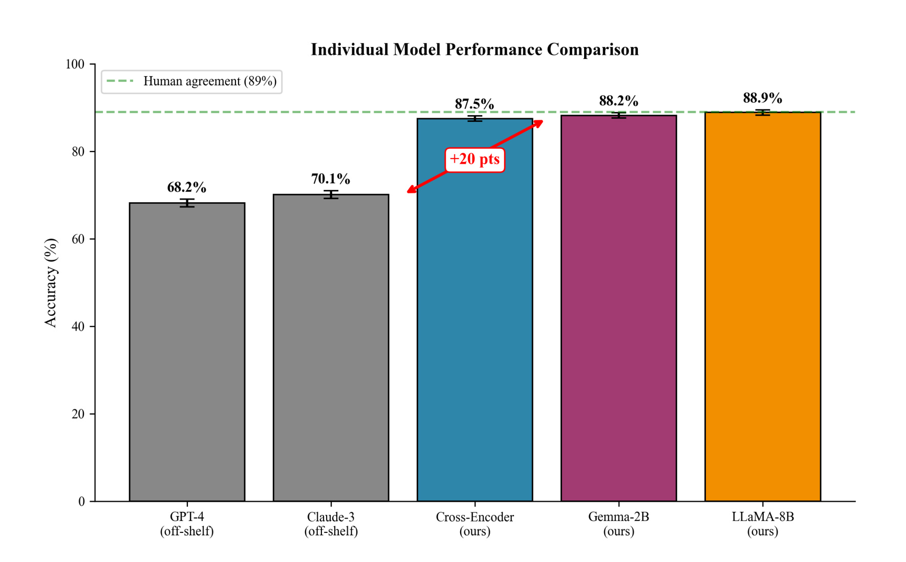
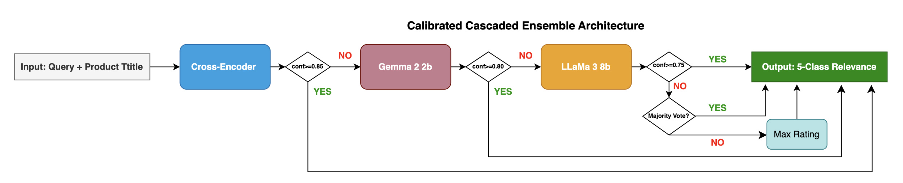
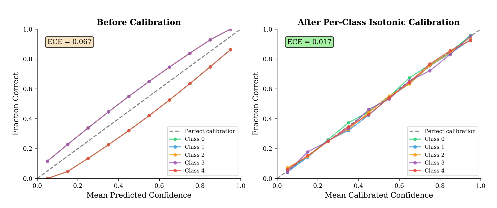
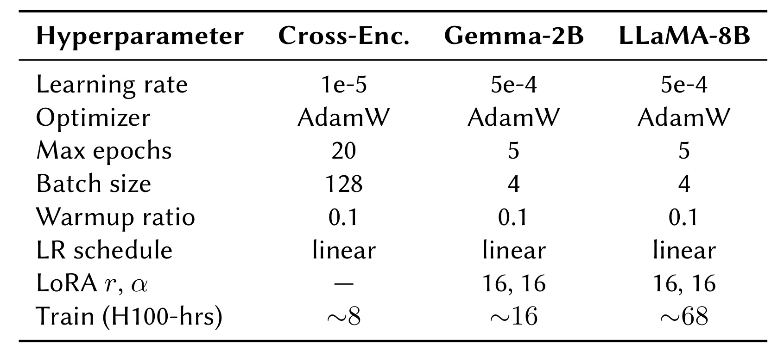
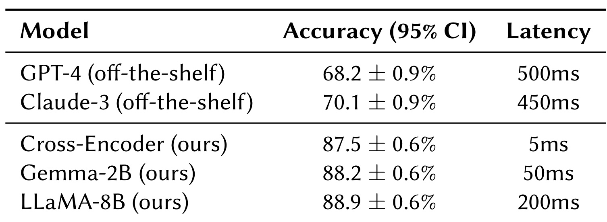
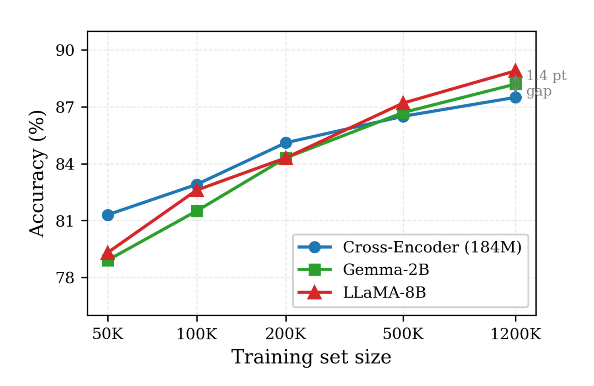
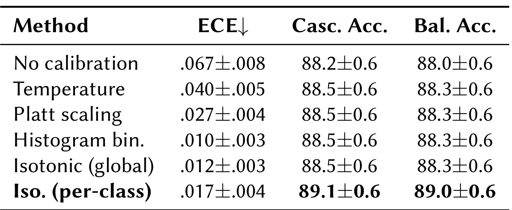
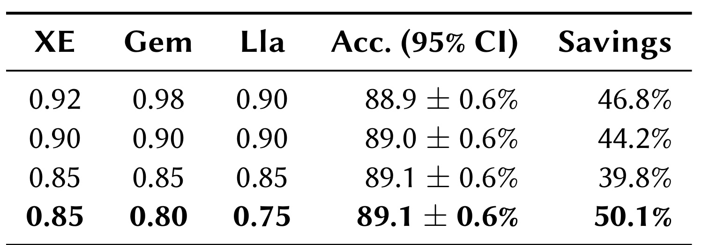
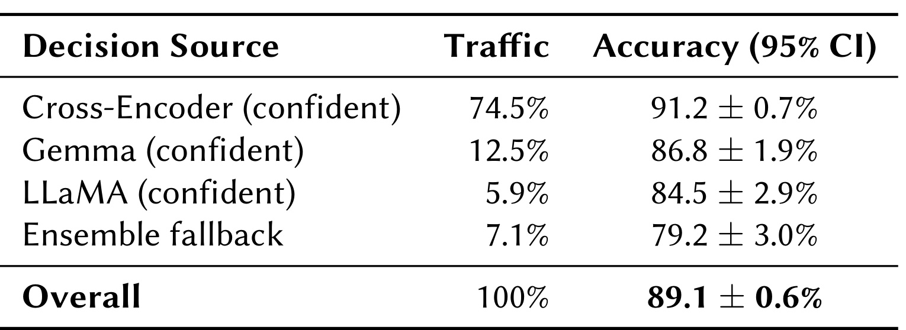
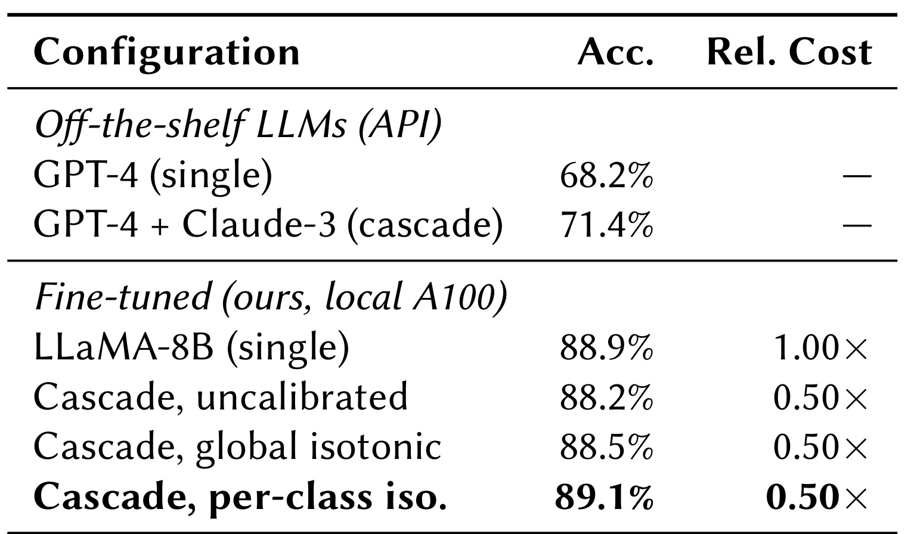

这篇论文来自 Walmart Global Tech，题目是 AutoRelAnnotator: Calibrated Model Cascades for Cost-Efficient Relevance Evaluation in Sponsored Search，论文入口：arXiv:2606.25871。作者把问题放在 sponsored search 的离线相关性标注链路里：训练排序模型、做 NDCG 评估、定位线上相关性故障、校准安全阈值和评估 A/B 特征，都要大量 query-product 级别的五档相关性标签。摘要页没有给出独立代码仓库；论文说明该工作已被 SIGIR 2026 E-commerce workshop 接收，生产部署和数据规模按正文披露理解。
赞助搜索需要大规模、高质量的相关性标注来支撑训练数据、NDCG 评估和故障根因分析；但人工标注慢且昂贵，通用 LLM 在领域相关性任务上准确率不稳，导致离线实验和质量诊断被标签生产能力卡住。
1. 背景和问题
这篇论文的切入点不是“用一个更大的 LLM 当 judge”，而是搜索广告系统里更基础、也更容易被低估的一层基础设施：离线 relevance annotation。对电商 sponsored search 来说，一条样本通常是用户 query 加商品标题，系统要判断广告商品对查询的相关性等级。这个标签不是单独服务某个模型训练任务，它会同时进入训练数据准备、NDCG 评估、根因分析、guardrail 阈值校准、特征 A/B 评估和 ANN dictionary 准备。也就是说，标注吞吐一旦不足，影响的不是某个实验，而是搜索 ML 生命周期里的多个环节。
作者在 Introduction 里给了一个很具体的生产约束：3 名受训标注员每天大约产出 3000 个标签，单价约 0.50 美元，超过 10000 条的批次需要 3 到 5 个工作日。这个数字解释了为什么“离线”并不等于“成本不重要”。离线流程不需要毫秒级响应，因此可以运行多个模型、做 ensemble fallback、做校准和批处理；但如果每次诊断或训练样本扩充都要等几天，系统迭代速度仍然被标签生产速度卡住。论文的目标就是在这个约束下，用自动化模型级联替代大部分人工标注吞吐，同时保持足够高的五分类相关性准确率。
通用 LLM 在这里不是天然解法。论文报告 GPT-4 在五档相关性任务上只有 68.2% accuracy，Claude-3 为 70.1%，明显低于作者观察到的约 89% 标注员一致性。已有 LLM cascade 方法可以通过路由减少成本，但如果级联里的每个候选模型本身都只有 68-72% 的领域准确率，那么再精巧的路由也很难越过组成模型的准确率上限。AutoRelAnnotator 的关键判断是：先用领域微调把单模型准确率推到 87-89%，再用级联负责成本优化；不要把“省钱的路由器”放在一组本来就不够准确的通用模型之上。

这张图把论文的核心矛盾压缩成一个非常直观的比较：GPT-4 和 Claude-3 两个 off-the-shelf 模型在五档相关性任务上只有 68.2% 和 70.1%，而经过领域微调的 Cross-Encoder、Gemma-2B、LLaMA-8B 分别达到 87.5%、88.2%、88.9%，并且贴近图中的 89% human agreement 参考线。图中红色箭头标出的 20 个百分点不是来自级联，而是来自领域分类器微调；级联在后面负责把这些高准确率模型按成本分层调用。这个区分很重要：如果只把论文理解成“模型级联省成本”，会漏掉作者真正的工程顺序，先把 judge/annotator 从通用生成式回答变成稳定的领域分类器，再谈路由、阈值和校准。
这也解释了它为什么属于推荐和搜索系统论文，而不只是校准论文。赞助搜索里的相关性不是一个抽象 NLP 标签，它直接关联 query intent、商品标题、广告召回、排序训练、线上根因分析和质量守护。人工标签的慢和贵会压缩实验频率；通用 LLM 的不稳定会把错误注入训练和评估闭环；而未校准置信度会让系统错误地相信便宜模型的输出。AutoRelAnnotator 试图同时解决三件事：用 domain fine-tuning 解决准确率，用 cascade 解决成本，用 per-class isotonic calibration 解决路由置信度。
需要注意的是，作者的适用边界也很清楚：这个系统只用于 offline annotation，不进入在线 serving path。它可以接受更高的单样本推理开销，因为最终目标是批量生产高质量标签，而不是实时返回搜索结果。这个定位使得 ensemble fallback、季度重训校准器、多个模型顺序尝试都变得合理。对推荐工程而言，它更像一个标签工厂或评估工厂，而不是一个线上排序模型。
2. 方法
2.1 系统架构：先把准确率做上去，再让级联负责成本
论文的方法从一个三段式离线级联开始：Cross-Encoder、Gemma-2B、LLaMA-8B 按成本从低到高排列，每个模型都已经针对五档 sponsored search relevance 任务做过领域微调。输入是 query 和 product title，输出是五档相关性类别。推理时，系统先让最便宜的 Cross-Encoder 给出预测类别和置信度；如果校准后的置信度超过该模型阈值，就直接接受；否则交给 Gemma-2B；还不够确定时再交给 LLaMA-8B；最后仍然模糊的样本走三模型 majority vote，并在平票时取更高相关性等级作为保守偏置。

这张流程图对应论文的 System Architecture。左侧输入是 Query + Product Title，随后经过 Cross-Encoder、Gemma 2B、LLaMA 3 8B 三个模型。每个模型之后都有一个 confidence 阈值判断：Cross-Encoder 的示意阈值是 0.85，Gemma 是 0.80，LLaMA 是 0.75。满足阈值就走 YES 分支并输出五档 relevance；不满足则继续向右交给更贵模型。最后的 majority vote 和 max rating 分支说明，系统不是简单把所有疑难样本都交给最大模型，而是为最难样本保留一个 ensemble fallback。图中的长回路也解释了成本节省来源：大量高置信样本会在早期退出，只有小部分样本需要后续模型或 ensemble。
这个架构的关键不是模型数量，而是“高准确率模型 + 可校准置信度 + 阈值退出”三者同时成立。单纯 cascade 通用 LLM，只是在低准确率模型之间选择；单纯微调最大模型，又会把每条样本都跑到 LLaMA-8B 上，成本偏高。AutoRelAnnotator 把两件事拆开：领域微调提供足够高的准确率地板，级联只负责减少不必要的大模型调用。因此它的训练阶段和推理阶段职责不同：训练阶段要让每个模型都成为可用的 relevance classifier；推理阶段则让 calibrated confidence 决定是否可以提前退出。
2.2 领域微调：把生成式判断改成可校准的分类概率
作者没有让 LLM 直接生成“相关/不相关”的自然语言答案，而是把三个模型都改造成五分类 relevance classifier。Cross-Encoder 使用 DeBERTa-v3-base，约 184M 参数，处理 query-title pair，延迟约 5ms；Gemma-2B 和 LLaMA-8B 使用 LoRA 微调，并加五分类头，延迟分别约 50ms 和 200ms。这样做的直接收益是输出变成明确的类别概率分布，而不是需要正则解析的自由文本。
论文给出的核心概率形式是：
符号解释：(q) 表示用户查询，(t) 表示商品标题，(h_{\mathrm{pool}}) 是模型对 query-title pair 的池化表示，(W) 和 (b) 是五分类头的参数，(y\in{0,1,2,3,4}) 是五档相关性标签。Cross-Encoder 使用最终的 [CLS] hidden state；Gemma 和 LLaMA 使用最终 token 表示的 mean pooling。这个公式的工程意义在于，系统后续要拿概率和阈值做决策，因此输出必须可排序、可校准、可比较。生成式 prompting 即使能输出标签，也不天然提供一个稳定的、多类别一致的置信度。
这一步也是论文与很多“LLM as annotator”工作的分界。作者不是简单比较 prompt，而是把 annotator 变成一个 domain-specific classifier。训练使用交叉熵损失和 validation cross-entropy early stopping，Gemma 和 LLaMA 的 LoRA 作用在 attention projections，分类头端到端训练。如果要在推荐/广告链路复现这类系统，关键不是换一个更强的 API 模型，而是先准备足够干净的领域标签，把模型输出约束成可校准的分类接口。
2.3 按类别 isotonic 校准：校准的是路由信号，不只是分数好看
级联能否省成本，取决于系统是否敢相信早期模型的“高置信”输出。论文指出 raw confidence 是 miscalibrated 的，而且不同 relevance class 的误校准模式并不一致：极端类别 0 和 4 容易过度自信，中间类别 1、2、3 又可能置信不足。只看 global ECE 会低估这种 class-conditional miscalibration，所以作者没有使用单一全局校准函数，而是对每个预测类别分别学习 isotonic regression。
论文的校准映射写作：
符号解释：(c) 是模型预测出来的类别，(\hat p) 是模型给该类别的原始置信度，(f_c) 是类别 (c) 对应的单调 isotonic calibration 函数，(p_c^*) 是校准后的置信度。训练 (f_c) 时，作者收集所有预测类别为 (c) 的样本，令 (z_i=1[\hat y_i=y_i]) 表示预测是否正确，再拟合从 (\hat p) 到正确概率的单调函数。它比 Dirichlet calibration 更简单，也保留了阈值路由所需的单调性：原始置信度更高的样本，校准后不应被反向排序。

图中左半部分是校准前，右半部分是按类别 isotonic 校准后。左图里不同类别的曲线明显偏离虚线的 perfect calibration，ECE 标成 0.067；右图中各类别曲线基本贴近对角线，ECE 变成 0.017。这里的重点不只是 ECE 下降，而是路由阈值的语义变得可信：当系统说 Cross-Encoder 的某个类别预测达到 0.85，工程上可以更有把握地认为它确实是一个可早退样本。否则早退会把错误锁死在便宜模型阶段，级联节省成本的同时会牺牲准确率。对五档相关性标注来说，中间档位经常比极端档位更难判，统一校准函数可能把这种差异平均掉；按类别校准则允许“同样是 0.8 置信度”在不同类别上有不同含义，这正是后续 threshold routing 能稳定工作的原因。
2.4 阈值决策与 fallback：把低置信样本留给更贵模型或 ensemble
Algorithm 1 可以简化成一个阈值接收规则：
符号解释：(m) 按顺序表示 Cross-Encoder、Gemma、LLaMA，(p_m^*) 是模型 (m) 当前预测类别的校准置信度，(\tau_m) 是该模型的接收阈值，(\hat y_m) 是模型预测标签。若三个模型都没有达到阈值，则系统使用 (\hat y_1,\hat y_2,\hat y_3) 的 majority vote；如果平票，则选择 max rating，即更高相关性等级。这个 tie break 在 sponsored search 的离线标注里有业务含义：过度惩罚相关广告的代价通常高于轻微高估，因此 fallback 偏向较高 relevance。
这一决策逻辑把训练和部署连接起来。训练得到的是三个可用分类器和每个类别的校准函数；部署时真正起作用的是每个阶段的阈值。阈值太高，中间模型可能形同虚设，大部分样本都流向大模型或 ensemble；阈值太低，便宜模型会吞掉本应交给后续模型的难样本。论文后面的 Table 4/5 正是在回答这个问题：如何选阈值，才能让 Cross-Encoder 处理大量高置信样本，同时把长尾、歧义样本留给更强模型。
3. 实验结果
3.1 数据、训练设置与个体模型表现
实验数据来自某大型电商平台的 sponsored search。作者用 18 个月收集的 1.2M query-product pairs 做微调，在 100K held-out 样本上评估；这些样本由 trained raters 按五档 relevance 标注，类别分布大致均衡，每类约 18-22%。评估集再拆成两半，一半用于校准拟合，一半用于最终评估。指标使用 1000 次 bootstrap 置信区间，差异超过 0.5% 时在 (p<0.01) 下显著。这个设置说明，论文不是只有摘要级模型比较，而是围绕离线标注生产链做了较完整的训练、校准、评估拆分。

这张表列出三类模型的训练设置。Cross-Encoder 学习率为 1e-5，batch size 128，最多 20 epochs，训练约 8 个 H100 小时；Gemma-2B 和 LLaMA-8B 学习率为 5e-4，batch size 4，最多 5 epochs，LoRA 的 (r,\alpha) 都是 16,16，训练成本分别约 16 和 68 个 H100 小时。表格说明最大模型不是免费增强：它的训练成本和推理成本都显著高于前两级。也正因为如此，级联架构才有意义；如果所有样本都跑 LLaMA-8B，准确率接近 88.9%，但无法获得论文强调的 50% 计算节省。这里还可以看到一个工程选择：作者没有把 Gemma/LLaMA 全参微调，而是用 LoRA 控制训练代价，同时保留统一五分类头，使三个阶段输出同构概率，后续校准和阈值才能共用一套路由逻辑。

Table 2 是第一个主结果。GPT-4 和 Claude-3 作为 off-the-shelf annotator，accuracy 分别是 68.2±0.9% 和 70.1±0.9%，延迟约 500ms 和 450ms；三个 fine-tuned 模型达到 87.5±0.6%、88.2±0.6%、88.9±0.6%，延迟分别约 5ms、50ms、200ms。这个对比支撑了作者最重要的结论：领域相关性标注里，fine-tuning 贡献的是大约 20 个 accuracy points，而不是级联本身。更有意思的是，最小的 Cross-Encoder 不仅比 GPT-4 准确得多，还快约两个数量级；这意味着在离线 annotation 工厂里，“小而专”的模型可能比“通用大模型 prompt”更适合作为高吞吐基础层。

Figure 4 进一步解释为什么级联顺序是 Cross-Encoder 到 Gemma 再到 LLaMA。横轴是训练集规模，从 50K 到 1200K；纵轴是 accuracy。Cross-Encoder 从 81.3% 增长到 87.5%，增幅约 6.2 点，较早接近平台期；Gemma-2B 和 LLaMA-8B 分别有约 9.3 和 9.6 点提升，且在 1200K 处仍有 1.4 点 gap。这个趋势说明便宜模型很适合处理大量容易样本，但更大模型仍然能从更多数据中学到长尾能力。级联因此不是随便排队，而是利用“便宜模型解决高置信主流样本，昂贵模型处理困难尾部”的 sample-efficiency 梯度。对数据建设也有启发：如果未来继续增加标注，收益更可能首先体现在较大模型和难例子上，而不是无限提升便宜第一阶段的覆盖面；因此阈值、采样和人工复核都应重点关注这些长尾样本。
3.2 校准方法比较
校准实验回答 Q2：per-class calibration 是否真的优于全局方法。比较对象包括 no calibration、temperature scaling、Platt scaling、histogram binning、global isotonic 和 per-class isotonic。这里有一个容易误读的点：per-class isotonic 的 global ECE 是 0.017，不如 histogram binning 的 0.010；但论文关心的是 cascade routing accuracy，而不是单个全局校准指标最小。因此要同时看 Casc. Acc. 和 Bal. Acc.。

表中 no calibration 的 cascade accuracy 是 88.2，temperature、Platt、histogram、global isotonic 都到 88.5，而 per-class isotonic 到 89.1，balanced accuracy 也到 89.0。作者强调，与最强的 global isotonic baseline 相比，per-class isotonic 仍有 +0.6 点提升，并在 paired bootstrap 下达到 (p<0.05)；相对无校准是 +0.9 点。这个结果说明，路由所需的校准和全局 ECE 排名并不完全一致。对推荐系统尤其如此：中间等级相关性往往最难判，如果统一校准函数掩盖了这些类别的误校准，便宜模型会在“看起来高置信”的中间类上过早退出，最终损害 NDCG 评估和训练标签质量。
3.3 级联成本-准确率
Q3 关注的是阈值如何影响成本和准确率。作者展示了几组阈值配置：XE/Gem/Lla 分别为 0.92/0.98/0.90 时，accuracy 为 88.9%，savings 46.8%；0.90/0.90/0.90 时，accuracy 89.0%，savings 44.2%；0.85/0.85/0.85 时，accuracy 89.1%，savings 39.8%；生产配置 0.85/0.80/0.75 时，accuracy 同样 89.1%，savings 达到 50.1%。这些数字说明，阈值不是越高越好。阈值过高会让中间模型贡献变小，难以充分利用整个级联。

Table 4 的价值在于，它把“成本节省”拆回到实际可调参数。生产配置降低了 Gemma 和 LLaMA 的阈值，反而在维持 89.1% accuracy 的同时获得最高的 50.1% savings。直觉上，这是因为 Cross-Encoder 已经承担大量高置信样本，而后续模型如果阈值过严，会把本可接受的样本推向 ensemble，增加成本。对工程落地来说，这张表提示阈值应该和真实流量分布、模型校准状态一起调，而不是简单用一个全局高置信标准。它也说明成本目标不能脱离质量目标单独优化：0.85/0.85/0.85 的 savings 只有 39.8%，而 0.85/0.80/0.75 既保留准确率又提升 savings，说明后段模型阈值有单独调参空间。

Table 5 展示了生产配置下样本从哪里退出。Cross-Encoder confident 分支处理 74.5% 流量，accuracy 是 91.2±0.7%，高于它 standalone 的 87.5%；Gemma confident 处理 12.5%，accuracy 86.8±1.9%；LLaMA confident 处理 5.9%，accuracy 84.5±2.9%；ensemble fallback 处理 7.1%，accuracy 79.2±3.0%；整体 89.1±0.6%。这里最关键的现象是，Cross-Encoder 在级联里的 accuracy 比单独使用更高，因为它只接收自己高置信的样本。级联不是让小模型“全量替代”大模型，而是让小模型在自己擅长的区域内高效退出，把低置信样本交给后续阶段。
3.4 组件消融与生产部署
Q4 是整篇论文最重要的归因实验：89.1% accuracy 到底来自哪里。Table 6 把 off-the-shelf LLM、off-the-shelf cascade、单个 fine-tuned LLaMA、uncalibrated cascade、global isotonic cascade、per-class isotonic cascade 放在一起。这个表能防止读者把所有收益都归给 cascade architecture。

表中 GPT-4 单模型为 68.2%，GPT-4 + Claude-3 cascade 为 71.4%，说明在低准确率通用模型之间级联只能带来 3.2 点。单个 fine-tuned LLaMA-8B 达到 88.9%，相对 GPT-4 关闭了 20.7 点差距，这是最大增益来源。未校准 cascade 是 88.2%、0.50× 相对成本，说明直接把所有样本级联会用一点准确率换来 50% 成本；global isotonic 到 88.5%；per-class isotonic 到 89.1%，仍保持 0.50× 相对成本。作者的中心论断因此成立：fine-tuning drives accuracy，cascading drives cost，calibration adds a small but reliable gain。对推荐系统读者来说，这比单纯报告“cascade 效果好”更有用，因为它说明每个工程动作到底在优化什么。
生产部署部分给了另一个维度的证据。系统自 Q3 2024 部署以来处理了 150M+ annotations，覆盖六类离线 use cases：训练数据准备超过 100M query-product pairs，NDCG 评估每次实验 10K+ annotations，根因分析在数小时内处理 1-2M annotations，此外还有 guardrail calibration、feature evaluation via A/B tests 和 ANN dictionary preparation。全部场景都不在 serving path 中，median turnaround 从 5 天降到 1-3 小时，三个团队在 Advertising、Marketing、Recommendations 中使用。这里的“生产验证”不是线上 CTR uplift，而是离线标签工厂吞吐和实验循环速度；论文没有声称它能直接提升线上业务指标。
作者也给出几条很实用的生产经验。第一，输入格式影响巨大，必须使用训练时完全一致的 template，小变化会让 accuracy 下降 10-15%。第二，calibrator 需要新鲜，作者按季度用滚动 50K 样本重训；过期校准器会让路由静默退化。第三，高阈值不总是更好，0.98 这类阈值会让中间模型失去作用。第四，与一项 LLaMA-2 7B 的三分类 sponsored search relevance 工作相比，本系统在更难的五分类任务上接近 89.43%，同时通过级联节省成本。以上经验都说明，这个系统的难点不只是训练一个模型，而是持续维护输入协议、校准窗口、阈值和流量分布。
4. 总结
4.1 我的判断
AutoRelAnnotator 的价值在于，它把“LLM 做标注”从 prompt engineering 问题改写成 search/recommendation infrastructure 问题。论文没有追求一个更炫的 judge 模型，而是把标签生产拆成准确率、成本、校准、fallback、吞吐和生产维护几个可治理模块。对广告排序和电商搜索团队来说，这个视角很实用：离线标注系统一旦可靠，就会同时加速训练数据积累、NDCG 回归评估、线上故障诊断和 A/B 特征分析。
我认为最值得借鉴的是它的归因方式。很多模型级联论文容易把成本下降和准确率提升混在一起说，AutoRelAnnotator 则明确指出：大幅准确率提升来自 domain-specific fine-tuning；级联主要负责把成本砍半；per-class isotonic calibration 只提供较小但稳定的增量。这个拆分能避免工程上错误投资。例如，如果一个团队的领域分类器只有 70% accuracy，先做 cascade 大概率只是便宜地生产差标签；如果单模型已经足够准确但成本过高，再做 calibrated cascade 才有意义。
4.2 工程启发与复现风险
第一，复现这类系统的先决条件是稳定的领域标签池。论文使用 1.2M 训练样本和 50K 校准样本，这对多数团队不是小门槛。没有足够覆盖 query/product 长尾的人工基准，自动标注系统可能只是放大历史偏差。第二，输入模板必须被当成模型接口契约管理，而不是自然语言提示词；作者提到小的格式变化会造成 10-15% accuracy drop，这意味着线上特征字段、文本拼接、归一化和训练/推理一致性都要纳入版本控制。第三，calibrator 的生命周期需要监控，季度滚动 50K 重训只是论文场景的经验值，真实系统里还需要 drift detection、分业务线阈值和回滚机制。
第四，论文的生产数据和任务不可公开，外部复现只能验证方法论，不能直接复现 150M+ annotation 的业务收益。第五，成本比较中 local A100 inference 和 cloud API latency/cost 不是完全同一口径；作者的主要部署无关结论是“相对每条样本都跑 LLaMA-8B，级联节省约 50%”，而不是所有环境下都比 API 更便宜。第六，max rating tie break 体现了 sponsored search 的业务偏好，在别的推荐场景可能不成立，例如内容安全或医疗搜索中，过度高估相关性可能更危险。
后续最值得跟进的方向有三条。其一，把这个框架和 human-in-the-loop deferral 结合：低置信样本不一定只交给 ensemble，也可以抽样回流人工，用于主动学习和校准刷新。其二，研究 per-segment calibration，例如按 query 类别、商品类目、广告主类型或流量来源分别校准，避免全局 per-class 函数掩盖业务段差异。其三，把 offline annotation 的质量信号反向接入训练数据治理，例如标注置信度、fallback 来源、校准版本都作为训练样本元数据，帮助排序模型区分高可信标签和低可信自动标签。
总体看，这篇论文对推荐系统的启发不是“所有 relevance 标注都可以自动化”，而是给出了一条比较务实的自动化路径：先定义清晰的领域分类任务和可度量的人类一致性基线，再训练可校准分类器，用级联降低批量标注成本，最后把校准、阈值、输入模板和生产用例当作长期运维对象。它没有消除人工标签的重要性，反而把人工标签从日常大规模生产转移到种子数据、校准刷新、长尾抽检和故障回归上。这种角色转换，可能比简单把 LLM 当便宜标注员更接近可持续的搜索广告标注基础设施。